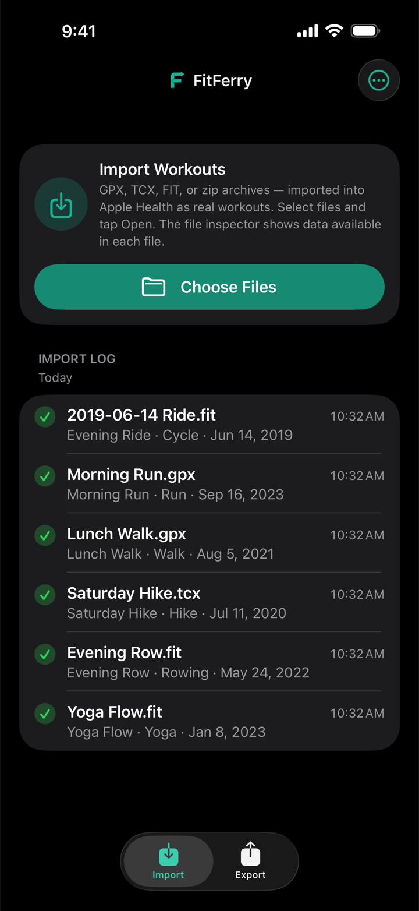

Import
Bring GPX, TCX, and FIT files into Apple Health as genuine historical workouts, with real past dates and time zones, GPS routes, heart rate, distance, and elevation gain when the file records it.
FitFerry moves GPX, TCX, and FIT files into Apple Health and back out again. On your device, on your terms.
Download on the App StoreFree unlimited exports plus 3 imports to test. $2.99 once for unlimited imports. No subscription, no account.

The runs, rides, and swims you've logged over the years belong to you, not to whichever platform holds them. FitFerry moves them into Apple Health and back out again, whenever you like. Your files and workouts are processed on your iPhone or iPad, with no servers of ours, no accounts, and no analytics. Nothing you import or export ever reaches us.
Bring GPX, TCX, and FIT files into Apple Health as genuine historical workouts, with real past dates and time zones, GPS routes, heart rate, distance, and elevation gain when the file records it.
Pick a whole platform export, like a Strava or Garmin archive, and bring your entire history over in one pass. Zip and .gz files open as they are, with no unzipping first. You can also share a file straight to FitFerry from Files or another app.
See exactly what a file carries before anything is written: dates, route points, heart rate, and everything else inside. Impossible readings, like a heart rate of 0 or a stray GPS jump, are left out and counted.
Runs, walks, hikes, rides, swims, rowing, yoga, strength, skiing, and more import as their own activity. Change any file's type before importing, or set them all at once.
Workouts already in Apple Health are skipped, and likely duplicates from other apps are flagged before you import. Importing the same export twice is safe.
One bad file never stops the rest. A long import keeps the screen awake, can be cancelled at any time, and picks up where it left off if it's interrupted. A summary at the end shows what landed and why anything didn't, and the Import Log keeps the record.
Take any workout out of Apple Health, from any app, as a GPX or TCX file. Routes are labeled with the place they started, so the right one is easy to find. Filter, multi-select, and export as many as you like. Export is always unlimited.
Delete what FitFerry imported: one workout, one batch, or everything. It only ever removes workouts FitFerry wrote itself, never another app's.
No accounts. No analytics. No data on servers. No third-party access. Your files and health data are processed on your iPhone or iPad; Apple's own frameworks may look up a map point for place names and time zones.
Miles or kilometers by region, and layouts that hold at the largest accessibility text sizes, on iPhone and iPad.
Three imports to check that your files land exactly right, plus unlimited export. Files already in Apple Health don't use one up.
Happy with the test run? Unlock unlimited imports and bring everything over. Not a subscription.
Purchases are handled by Apple through the App Store. There is nothing else to buy. Questions? See the FAQ.